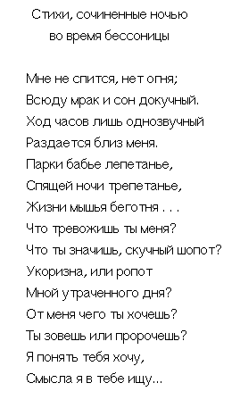
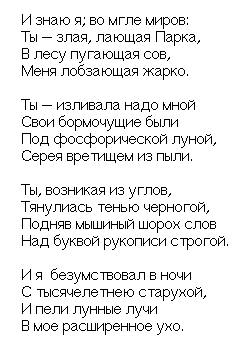

Notes 22
Protagonist I believe Bely means "protagonist," the "first" and therefore major actor. Cf. also the meaning of protagon [f. Gr. prout-os first+ agon, neut. pres. ppl. of agein to lead] "A highly complex crystalline substance, containing nitrogen and phosphorous, found in brain and nerve tissue." OED, XII, 675.
"Uhr" German for "time, hour"
Parcae. Parca, pl. Parcae. "A Roman goddess of birth, identified (app. by false etymology with the Greek Moirai and then pluralized to correspond to them." Oxford Latin Dictionary, 1294. These are the three Roman goddesses of Destiny, spirits of childbirth depicted as spinning thread measuring out the lives of humans. The three fates, one over death, one over birth, one over marriage. Bely uses the image of Parca in his poem "Karma" from which he includes the following stanza. He is doubtlessly also recalling Pushkin's line "Old women's prattling of the Parcae" [Parki bab'e lepetan'e] in the "Poem composed at night during sleeplessness."(1830). I am grateful to Swetlana Geier for pointing out the association and her help throughout in difficult places of Bely's text.

And we rave mindlessly in the night A version of Bely's own poem "Karma" (July, 1917) from Zvezdy (1922/reprinted 1966) , p.360, where it reads:

Thanks to Mikhail L. Gasparov and Anatole Shaikevich at the Computer Fund of the Russian Language (CFRL) for their help in identifying the source of the quotation.